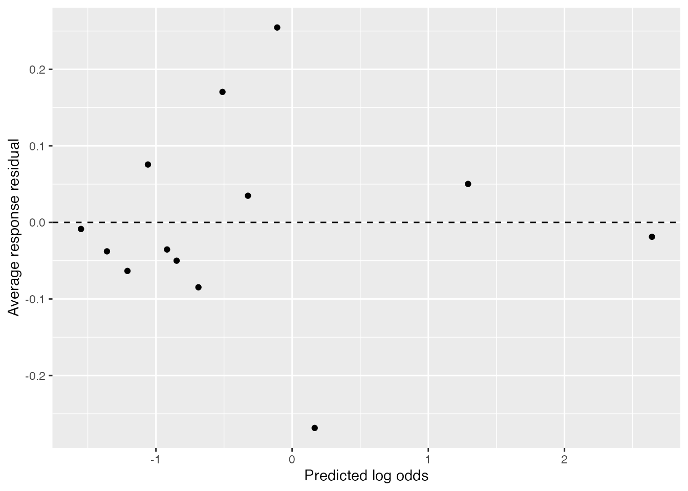
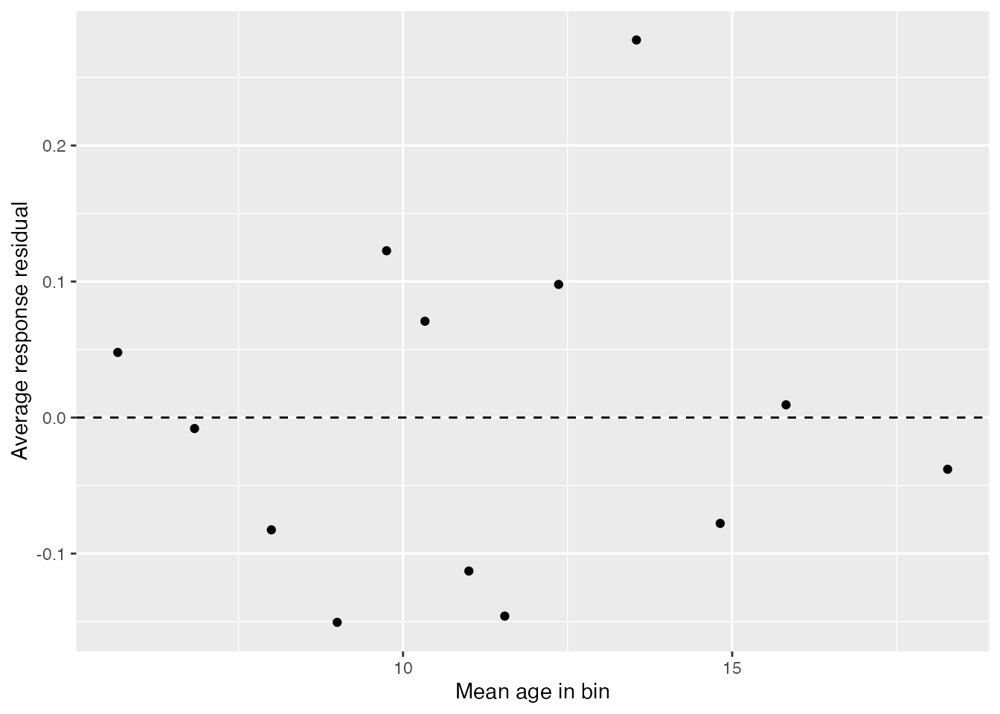
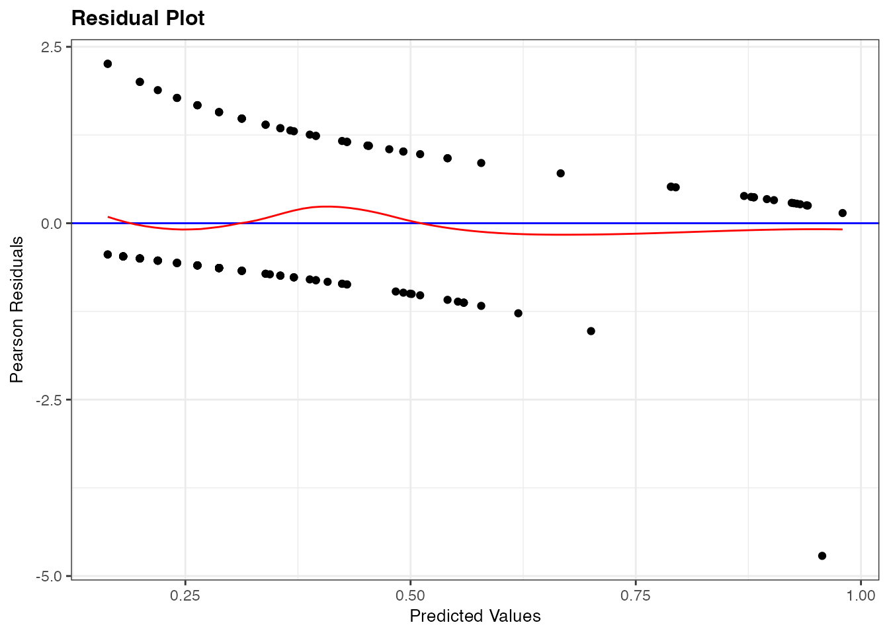
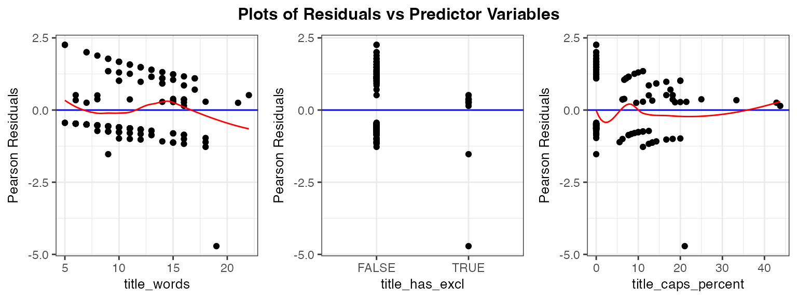

library(dplyr)
library(broom)
library(ggformula)
library(car)
library(ggResidpanel)20: Inference for Logistic Regression
Stat 230 - Spring 2026
In this tutorial we’ll explore the model fit of a binary logistic regression using R. We’ll use the fake news dataset as an example. To load the data, run the following code chunk:
news <- read.csv("https://aluby.github.io/stat230/data/fake_news_bayesrules.csv")We’ll explore the same model discussed in class, which is fit below.
news_mod <- glm(type_num ~ title_words + title_has_excl + title_caps_percent,
data = news, family = "binomial")In the next sections, you’ll be guided through conducting inference and creation of the various diagnostic plots discussed in class. Be sure to run each code chunk to see the resulting plots, and don’t hesitate to ask me questions if things are unclear!
Inference
You have already seen that we can obtain Wald-based tests via the summary() command. To extract only that coefficient table, you can use the tidy() command from the broom package:
library(broom)
tidy(___)To calculate Wald-based confidence intervals for each regression coefficient, we can use the confint() command, specifying the level argument:
tidy(news_mod, conf.int = TRUE, conf.level = 0.9)# A tibble: 4 × 7
term estimate std.error statistic p.value conf.low conf.high
<chr> <dbl> <dbl> <dbl> <dbl> <dbl> <dbl>
1 (Intercept) -2.23 0.672 -3.32 0.000894 -3.38 -1.16
2 title_words 0.120 0.0581 2.07 0.0383 0.0260 0.218
3 title_has_exclTRUE 2.00 0.849 2.35 0.0186 0.722 3.61
4 title_caps_percent 0.0498 0.0295 1.69 0.0908 0.00194 0.0993Residual plots
Like in linear regression, we can construct residual plots to assess the fit of our binary logistic regression model. The interpretation of these plots is harder, however, since the response variable is binary; thus, we can’t expect to see a random scatter of points around zero like we did in linear regression. To help with the interpretation, we’ll explore both binned residual plots and Pearson residual plots with a LOESS smoother.
Binned residual plots
To construct a binned residual plot we follow these steps:
- Calculate response residuals
- Order observations either by the values of the predicted log odds/probabilities, or by quantitative predictor variable
- Use the ordered data to create \(g\) bins of approximately equal size. (A reasonable starting point is \(g = \sqrt{n}\))
- Calculate average residual value in each bin
- Plot average residuals vs. average predicted log odds, probability, or predictor value
Let’s implement these steps in R. First, we augment (add columns to) our data set with the predicted values and response residuals:
news_aug <- augment(news_mod, type.predict= "link", type.residuals = "pearson") |>
mutate(.resp.resid = resid(news_mod, type= "response"))
NoteAdapting the code
To adapt this code for your own binary logistic regression model, simply replace news_mod with the name of your model object in both the augment() function and the resid() function.
Next, we create the binned residual plot by following steps 2-4 outlined above:
binned_resids <- news_aug |>
mutate(bin = ntile(news_mod$linear.predictors, 13)) |>
group_by(bin) |>
summarize(mean_linear_pred = mean(.fitted),
avg_resid = mean(.resp.resid),
.groups = "drop")
NoteAdapting the code
To adapt this code for your own binary logistic regression model, replace news_aug with the name of your augmented data set and then replace news_mod$linear.predictors with the linear predictors from your model object (by changing the model name to the left of the $). Additionally, you can adjust the number of bins (currently set to 13) based on your data size.
Finally, we plot the binned residuals:
gf_point(avg_resid ~ mean_linear_pred, data = binned_resids,
xlab = "Predicted log odds", ylab = "Average response residual") |>
gf_hline(yintercept = 0, linetype = 2) 
The above process creates a binned residual plot of the response residuals against the predicted log odds. You can also create similar plots using predicted probabilities or individual predictor variables by adjusting the code accordingly.
Below we create a binned residual plot where 13 bins were created from the title_words variable. Notice that now we need to calculate both the mean value of the predictor and the mean value of the residual.
news_aug |>
mutate(bin = ntile(title_words, 13)) |> # Creating 65 bins for age
group_by(bin) |>
summarize(mean_x = mean(title_words),
avg_resid = mean(.resp.resid)) |>
gf_point(
avg_resid ~ mean_x,
xlab = "Mean age in bin",
ylab = "Average response residual"
) |>
gf_hline(yintercept = 0, linetype = 2) 
Pearson residuals
To create a Pearson residual plot with a LOESS smoother, we can use the resid_panel command from the ggResidPanel Package, similar to what we did in linear regression. The only difference is that we need to specify type = "pearson" to indicate that we want to plot Pearson residuals.
Below we recreate the residual plots from the slides:
resid_panel(news_mod, plot = "resid", type = "pearson", smoother = TRUE)
resid_xpanel
resid_xpanel(news_mod, yvar = "residual", type = "pearson", smoother = TRUE, nrow = 1)
Your turn
- Make binned residual plots for the binned residuals against
title_caps_percent. What do you conclude? - Report 95% confidence intervals and provide interpretations on the odds scale for all predictor variables
- Discuss together: why do we need to make residual plots and check conditions?
Function quick reference
The following table summarizes the functions discussed above:
| Function | Purpose |
|---|---|
augment(model, type.predict, type.residuals) |
Add predicted values and residuals to data set |
resid_panel(model, plot = "resid", type = "pearson", smooth = TRUE) |
Create residual plot with LOESS smoother |
group_by(variable) |
Group data by variable for summarization |
summarize() |
Summarize data by calculating statistics like mean, count, etc. |
gf_point(y ~ x, data, xlab, ylab) |
Create scatter plot of y vs. x with labels |